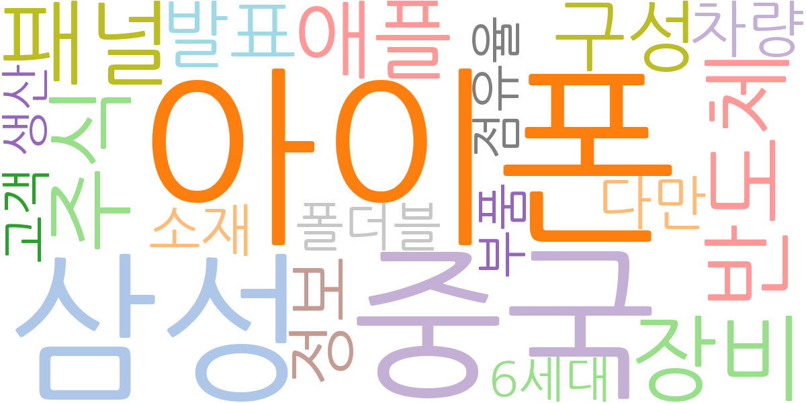
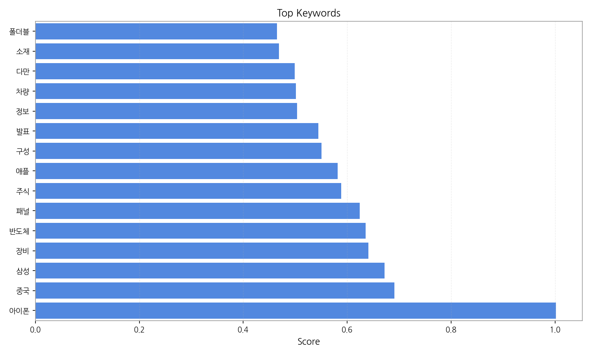
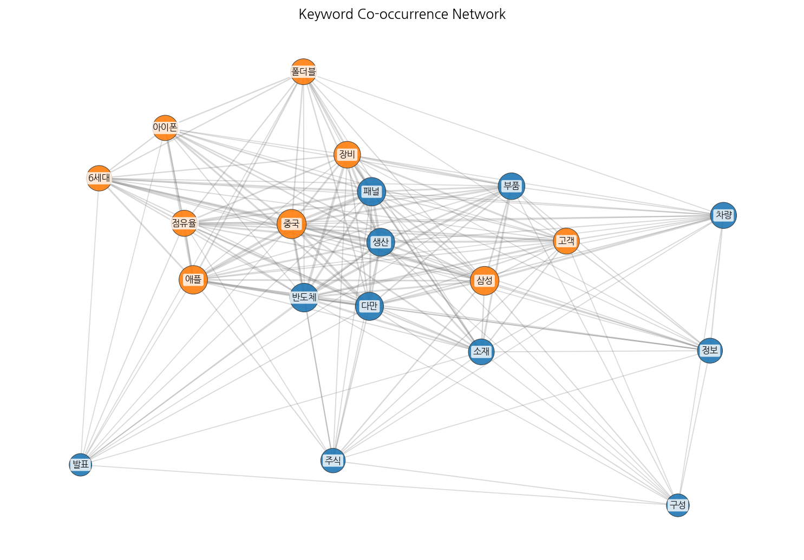
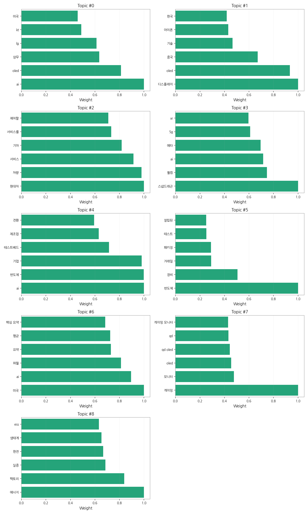
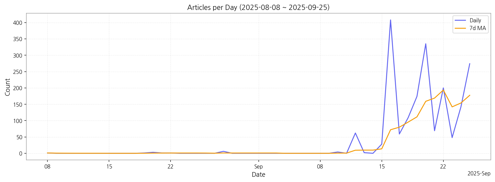

1. 핵심 맥락:
2. 최근 변화/스파이크:
3. 실무 인사이트:

| Rank | Keyword | Score |
|---|---|---|
| 1 | 아이폰 | 1.002 |
| 2 | 중국 | 0.691 |
| 3 | 삼성 | 0.672 |
| 4 | 장비 | 0.641 |
| 5 | 반도체 | 0.635 |
| 6 | 패널 | 0.624 |
| 7 | 주식 | 0.588 |
| 8 | 애플 | 0.581 |
| 9 | 구성 | 0.550 |
| 10 | 발표 | 0.544 |
| 11 | 정보 | 0.504 |
| 12 | 차량 | 0.502 |
| 13 | 다만 | 0.499 |
| 14 | 소재 | 0.469 |
| 15 | 폴더블 | 0.465 |




1. 핵심 맥락:
2. 최근 변화/스파이크:
3. 실무 인사이트:
| Idea | Target | Value Prop | Score |
|---|---|---|---|
| XR 기기용 초고해상도 가변형 마이크로디스플레이 | 북미 빅테크 기업 (XR 기기 개발 부서) | 가변 초점 렌즈와 연동되는 초고해상도 마이크로 OLED 디스플레이로, 사용자의 시선에 따라 최적화된 몰입 경험을 제공합니다. AI 기반의 이미지 처리 기술을 통해 저전력으로도 선명한 화질을 유지합니다. | 4.50 |
| AI 기반 디스플레이 공정 자동화 및 수율 개선 솔루션 | 국내외 디스플레이 제조사 (OLED, MicroLED) | AI 기반의 실시간 공정 데이터 분석 및 예측 모델을 통해 불량 발생 가능성을 사전에 감지하고, 공정 조건을 최적화하여 수율을 극대화합니다. 머신 비전 기반의 자동 검사 시스템을 통해 불량 제품을 신속하게 식별하고, 공정 개선에 활용합니다. | 4.30 |
| 차량용 AR HUD 몰입형 디스플레이 솔루션 | 글로벌 완성차 OEM (프리미엄 브랜드) | MicroLED 기반의 압도적인 화질과 넓은 시야각을 제공하여 운전 몰입도와 안전성을 극대화하는 AR HUD 솔루션. AI 기반의 실시간 객체 인식 및 3D 렌더링 기술을 통해 더욱 정확하고 직관적인 정보 제공. | 4.20 |
| 차세대 디스플레이용 양자점(Quantum Dot) 신소재 개발 및 공급 | 글로벌 디스플레이 제조사 (OLED, QLED) | 카드뮴 프리(Cd-free) 기반의 친환경 고효율 양자점 소재를 개발하여 디스플레이의 색 재현율과 휘도를 향상시키고, 환경 규제에 대한 리스크를 해소합니다. AI 기반의 소재 설계 및 합성 기술을 통해 더욱 안정적이고 균일한 품질의 양자점 소재를 제공합니다. | 4.00 |
| IT 기기용 무편광 OLED 패널 솔루션 | 글로벌 스마트폰 제조사 (프리미엄 라인) | 무편광 OLED 기술을 적용하여 빛 투과율을 극대화하고, 외부 빛 반사를 최소화하여 뛰어난 시인성을 제공합니다. AI 기반의 화질 보정 기술을 통해 색 재현율과 명암비를 향상시켜 더욱 생생한 화면을 제공합니다. | 3.80 |